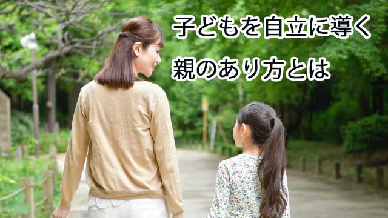

何かがうまくいかない。たとえば仕事やプライベート。人間関係などスムースに進まないときその原因を周囲の環境、状況、他者のせいにする人が最近目につく。
「自分が悪いわけじゃない。こちらを理解しない相手が悪いのだ」という態度だ。
確かにうまくいかないとき誰でも相手に問題があると考えるのはよくあることだし、その気持ちは理解できないでもない。
しかし、そういう人と話していて気になるのは心の奥底に親への反感や恨みを抱えている場合があることだ。
どこかに自分が不幸なのは「親のせいだ」という思いをもち続けている。この思いが根本にあるから「悪いのは自分じゃない。他の誰か（状況や他者）だ」と責任転嫁する思考パターンが根づいている。
親への「理不尽」や「葛藤」を抱えていると言うと、親が子どもにつらく当たっていたとか多くの葛藤があったと思いがちだが、必ずしもそうではない。
意外にも親に従順で、むしろ素直で優しい子ども時代を過ごしていた人が多い。
親子の葛藤が少なかったからこそ自立心が育たなかったケースなのだ。
反対に親の価値観になじめず、反発や抵抗を感じ続け激しく葛藤したが故にその分早く子どもが自立できることもある。
ここが親子関係の難しいところかも知れない。
親は知らずしらずのうちに自分の価値観、信念を子どもに押しつけがちだ。もちろん「押しつけている」という意識はなく、あくまで子どものためと思っているわけだが、親の価値観を受け入れるかどうかは子ども次第だということを忘れている。
親子といえ別人格である以上、親の考え方にどうしてもなじめない子もいることを認めなければならない。親に真っ向から反発できるだけの「強さ」をもった子はよいが、多くの子どもは親の力に屈してしまうからだ。
子どもは親が考える以上に親のことを愛している。心の深層で「違う」と思っていても親を怒らせたくない、失望させたくない一心で自分の本心にフタをしてしまいがちだ。
そしてその偽物の自分を本当だと信じこんで生きていく。
するとどうなるか。
自分らしく人生を生きていないという欠落感や、常に他人の顔色をうかがい状況や環境に流され、その場その場で支配的な力に合わせるだけの依存的生き方になってしまう。
つまり主体的に人生を歩めなくなるのだ。
うまくいかないのは無力感のせい
最近、若者だけでなく中高年になってもこのように自立的に人生を歩めない人が目立つ。
こういう人は冒頭で述べたように、問題が起こると周囲のせいにするので依存的タイプだと分かる。自己肯定感が弱く、その原因を「親のせいだ」と考えていることも多い。
「自分は親の言うことを真面目に聞き、自分なりに一生懸命やってきたのにうまくいかない。これはそもそも親が悪いのだ。」
これは実際50代の人から聞いたセリフだ。
この人は家庭でも仕事上の人間関係でも悩みが尽きなく、散々悩み抜いた結果上のような結論に至ったわけだが、こういう人に言いたいのは次のようなことだ。
大事なことは原因を探ることではない。それより親も含めて事あるごとに周囲のせいにしてきた自分の思考パターンそのものに気づくこと。よく言われるように問題を他者（状況）のせいにすることは自分の人生の主導権を他に明け渡していることになるからだ。
そして自分は無力で人生をコントロールできないと表明しているに等しい。
つまり自分の幸不幸は他者次第ということになる。これは状況に依存することで自らを無力な存在に仕立て上げる行為といえるだろう。
言い換えれば「自分は無力だから人生に責任は取りたくない」と言ってるように聞こえる。
これでは自分の人生を放棄する態度に等しい。
1つ明らかにしたいことは、外側で起こる出来事は内面の投影だということ。
「自分は無力で他者や状況の被害者だ」と思うことが、そう思わざるを得ない現実を招き寄せているといえる。
他者や状況のせいにすればするほど、それらは力をもちますます強固な現実となって自分を振り回す。
このループから抜け出すには見方を逆転させるしかない。
すなわち自分は人生に責任をとれない無力な存在などではなく、主体的に自分の生き方を創造することができると考えれば、それに呼応して外側の現実も変わるだろう。
つまり内面が変われば外側も変わるということ。
そうすると不思議なことが起こる。
親に対する認識も変わるのだ。
親に悪気があったわけではない。未熟だったかもしれないが親もまた、一生懸命自分を育ててくれたのだ。それは愛だったと改めて深く気づくだろう。
子どもに本心を言語化させること
一方、親の立場からみるとどうなるだろう。
親は我が子が素直で言うことを聞く「良い子」であって欲しいと思うものだ。反抗的だったり問題事を起こすような子になって欲しくないと望んでいる。
だがそこに落とし穴があるのだ。
別の機会に詳しく述べるが、実は子どもというものは親の言うことを聞かない、聞きたくないのが自然なのである。同じことを他の人が言ったら素直に聞けることでも、親が言うからこそ聞きたくないということはないだろうか。
この親という存在そのものへの拒否、否定、抵抗こそが思春期以降にあらわれる自然な特徴であり、自立へ向けての本能的欲求なのだ。
だから我が子が素直で、よく言うことを聞くから良かったと安心するのは早計で、その分陰で発散していたり、自分の本心（親への違和感）を隠し持っていないか疑ってみなければならない。（むろん生まれつき穏やかで素直な性質の子は反抗しなくても心配はない）
素直な良い子が精神的に自立できず生きづらい人生を歩んでしまうことはよくあることだ。これは親の本意ではないはずだ。
そうならないために親が心がけるべきことは何だろう。
それは幼いうちから子どもに自分の気持ちを話させるよう努めることだ。なるべくきちんとした言葉で内面の思い―感じていること、考えたこと―を率直に語るよう励ますこと。親も「ワンワンちゃんだねえ」などと幼児ことばで語るのではなく、明確な言葉で子どもと会話すべきだ。
親はどうしても幼い子に対して「こうすべき」を押しつけがちだ。それはある程度仕方ない面もあるが小学生以降は、1人の人間と認めて、本人の考えや感情を表明することを尊重したい。
自分はどう考え、どう思考し、どう感じたのかそれをきちんと言語化することで子どもは自己の内面と行動が一致する。バランスの取れた人間に育つだろう。
こうして内面を言語化する能力は、親に対する否定や反抗に向かうと親もたじろぐほど威力を発揮するかも知れない。（親にとって辛い瞬間だ）あるいは親と対等に話し合うことで相互理解をもたらすかも知れない。いずれにせよ子どもは、本心にフタをせず自分を表現して良いのだと認められることで自己肯定感をもち自立の精神を育まれるだろう。
最後に
親は子どもとある意味で「対決」することを恐れてはならない。特に生意気盛りのとき子どもの言動が未熟であっても頭ごなしに決めつけるのではなく、しっかりとその言い分を受け止めて欲しい。
そうして親を乗り超えることを願いながら「お前の考えに賛成できないが、お前がそう信じるなら突き進んでみなさい」と肩を押して欲しい。
こうして子どもは自己信頼と責任をもって人生の荒波に向かっていくことができるのだ。
子どもを自立させることは親にとってはいつも少し寂しい。しかし親もまたそれを乗り超えなければならない。
ちょうどあなたの親がそうであったように。